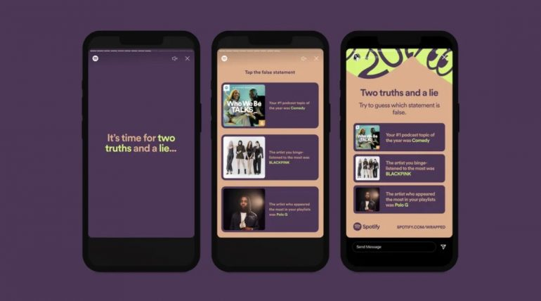

UN AÑO MÁS, SPOTIFY SE GANA LA CONVERSACIÓN EN REDES SOCIALES CON EL RESUMEN MUSICAL QUE INCLUYE NOVEDADES Y HERRAMIENTAS MÁS INTERACTIVAS QUE NUNCA.
SPOTLIGHT
– Wrapped 2021 solo está disponible a través de la app de Spotify.
– La compañía ha añadido nuevas funciones que fomentan la interacción y la publicación en RRSS.
– Spotify también ha publicado los artistas y álbumes más escuchados: Bud Bunny repite por segundo año consecutivo.
Diciembre es el mes que más esencia propia tiene. Con mayor marchamo. En tan solo treinta y un días, aglutina las fiestas navideñas, los reencuentros familiares, el regreso temporal a casa, el consumismo, puentes, fiestas, luces y pagas extras. Todo ello, añadiendo una necesidad de realizar balances. Aunque socialmente tendría más sentido realizarlo en verano (septiembre tiene más de cambio de ciclo que el propio diciembre), lo hacemos en este mes: “¿Qué he hecho este año? ¿Cómo me ha ido?”.
Un balance que, en lo musical, nos lo ponen muy fácil. A través de Spotify y su particular y ya recurrente Wrapped, con un solo click podemos toparnos con el resumen del año. Los artistas más escuchados, los álbumes, los géneros y, claro está, ahora también los podcasts.
Imagen: Spotify
Spotify Wrapped 2021 se ha sofisticado, añadiendo nuevas opciones personalizadas muy ideadas para ser compartidas a través de otras redes sociales: Facebook, Twitter, Instagram y, desde este año, TikTok. La compañía, siempre juguetona, incita a que los usuarios conviertan sus gustos en un challenge musical:
- 2021, la Película: Spotify convierte tu año en una película con los típicos tropos cinéfilos. Es decir, aunar tus canciones más escuchadas para que se conviertan en la banda sonora de la escena de créditos iniciales, el baile, el momento de reflexión al más puro estilo ‘Rocky’.
- Aura musical: La plataforma sintetiza todo lo escuchado en un solo año y lo traduce en el aura que tienes a través de un color. Es decir, el estado de ánimo que resume 2021. Por tanto, si te sale naranja has sido rebelde, si es amarilla es porque has estado muy concentrado, con el rosa te define como alguien romántico, el verde es sinónimo de introspección, la melancolía está representada por el azul y el morado es para los usuarios que más le dieron al “descubrimiento semanal”.
- Wrapped 2021 Fusión: Tras el lanzamiento de la opción “Fusión”, Spotify lo incluye en el Wrapped de este año para que puedas comprobar qué tal es la comparativa con tus mejores amigos. El resultado es una playlist combinada.
- Dos verdades y una mentira: Otra interacción que busca el contacto entre usuarios. En este caso, permitirá compartir en redes sociales un juego basado en dos datos reales y otro falso. Tus seguidores deberán descubrir cuál es.
Spotify Wrapped 2021 solo está disponible a través de la versión para smartphones. Si en la app de tu teléfono aún no aparece, prueba con este enlace.
Imagen: Spotify
LOS ARTISTAS MÁS ESCUCHADOS DE 2021
A nivel global, Spotify ya ha publicado los listados con lo más reproducido en la plataforma. Y por segundo año consecutivo, el idioma dominante vuelve a ser el español. Bad Bunny repite como el artista top a escala mundial, con 9.100 millones de reproducciones este 2021. Y lo hace por delante de nombres como el de Taylor Swift, BTS, Drake y Justin Bieber.
Another year at the top for #BadBunny! Congratulations to 2021’s most-streamed artist 🥂 #SpotifyWrapped pic.twitter.com/mCl8fFxoXM
— Spotify (@Spotify) December 1, 2021
Te dejamos todos los tops para que compares los datos con tu Wrapped 2021.
Artistas más escuchados en el mundo en 2021
- Bad Bunny
- Taylor Swift
- BTS
- Drake
- Justin Bieber
Canciones más escuchadas en 2021
- “Drivers license”, de Olivia Rodrigo
- “Montero (Call Me By Your Name)”, de Lil Nas X
- “Stay”, de The Kid LAROI con Justin Bieber
- “Good 4 u”, de Olivia Rodrigo
- “Levitating”, de Dua Lipa con DaBaby
Álbumes más escuchados en 2021
- ‘Sour’ – Olivia Rodrigo
- ‘Future Nostalgia’ – Dua Lipa
- ‘Justice’ – Justin Bieber
- ‘=’ – Ed Sheeran
- ‘Planet Her’ – Doja Cat